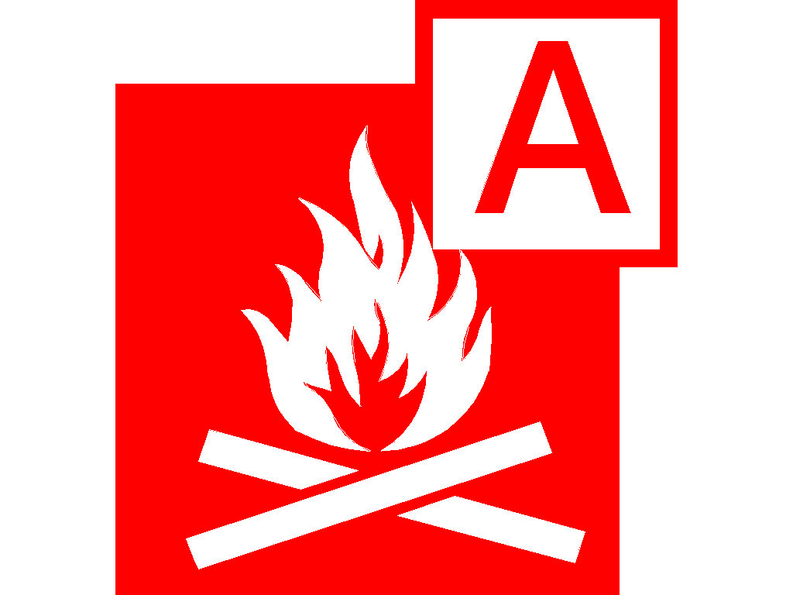
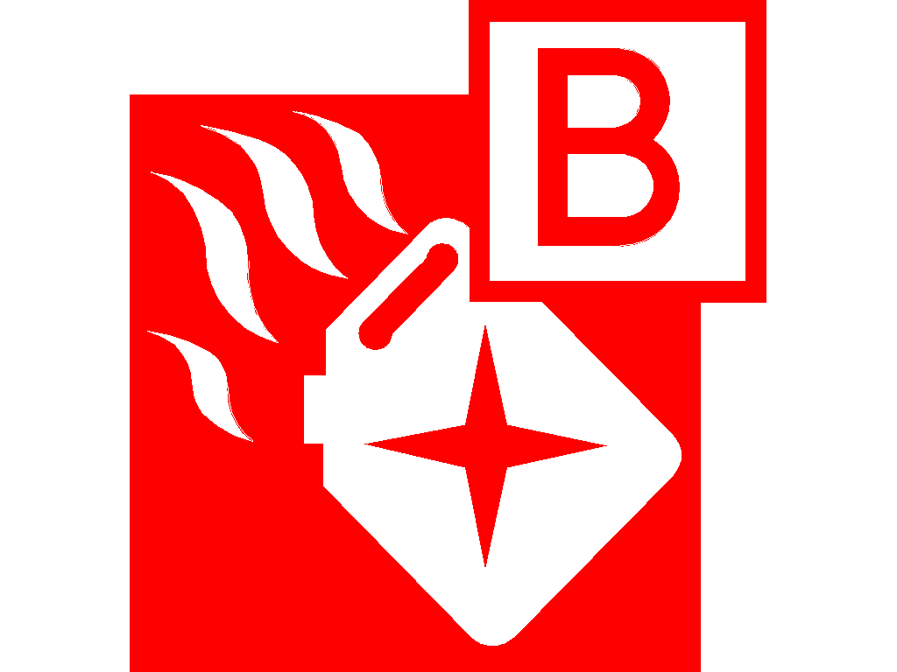
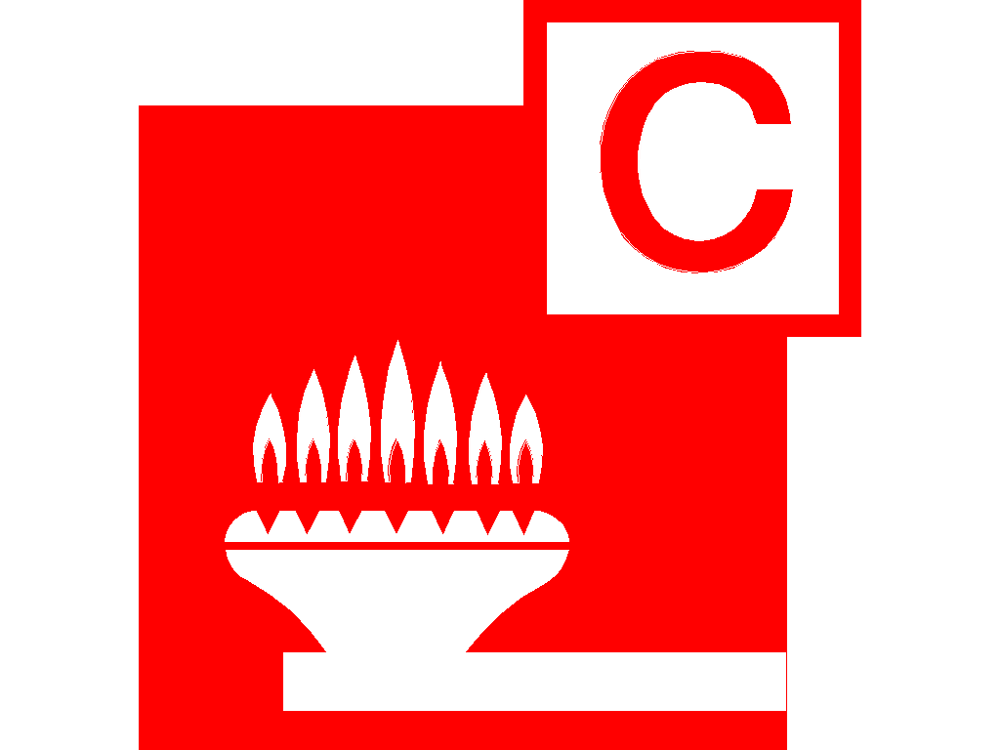
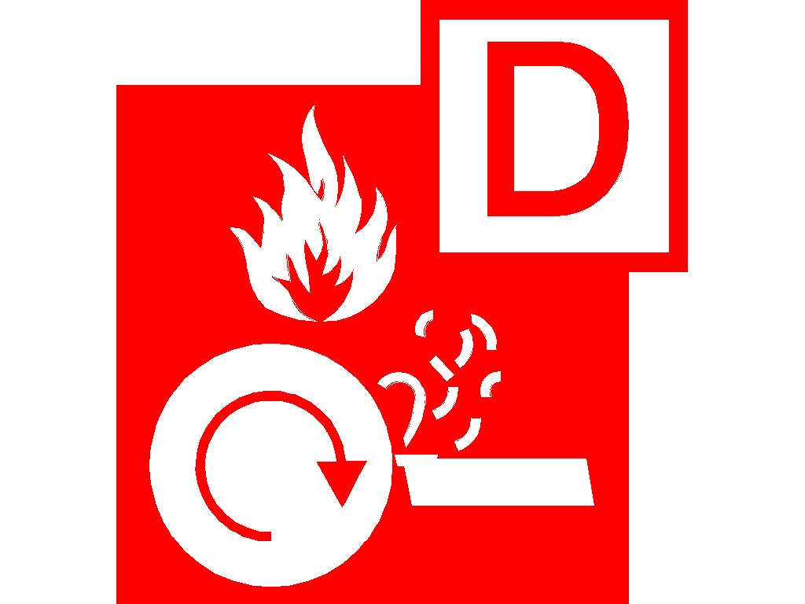
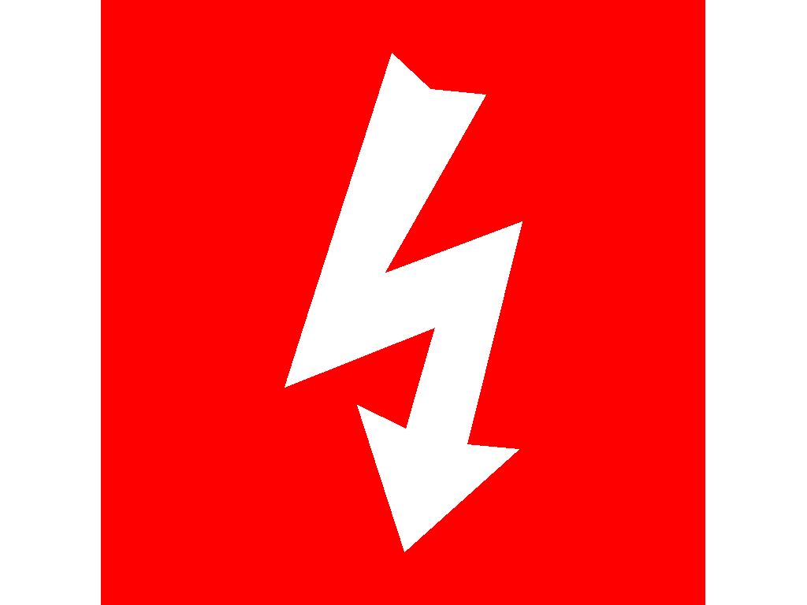
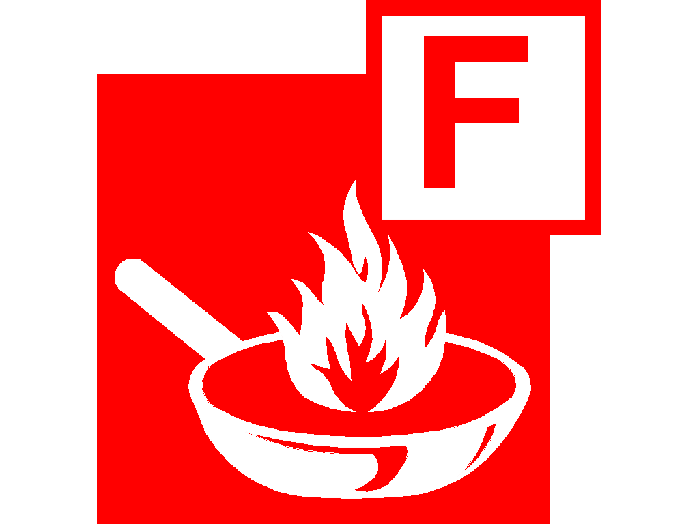

Everything about Fire Safety
Types of fires, how they start, how to put them out & how to prevent them
|

Class A - Solids
Fires involving solids are classified as Class A. Paper and cardboard, which are commonly used in offices and manufacturing, could be used as fuel. It could be furniture or fixtures and fittings. It could even be the structure of the building.
Best Type of fire extinguisher to put it out: Water & Foam
✎ How to prevent?Good housekeeping should help to keep materials like packaging and waste to a minimum, thereby reducing risks.
|

Class B - Liquids
Flammable liquids should be stored in tightly sealed, self-closing, spill-proof containers. Refueling gasoline-powered equipment should not be done while it is hot. Only take what you need from the storage drums. Keep flammable liquids away from sparking sources.
Best Type of fire extinguisher to put it out: Foam & Powder
✎ How to prevent?Flammable liquids should be stored in tightly sealed, self-closing, spill-proof containers. Refueling gasoline-powered equipment should not be done while it is hot. Only take what you need from the storage drums. Keep flammable liquids away from sparking sources.
|

Class C - Gases
Class C fires are those that involve gases. This could include natural gas, LPG, or other gases that create a flammable or explosive atmosphere.
Best Type of fire extinguisher to put it out: Powder
note: when putting out this type of fire, the most vital and safest step is shutting off the gas supply
✎ How to prevent?Working with gas is hazardous and increases the risk of a fire. Keep stored gases in sealed containers in a safe storage area, and make sure that gas work is done by qualified people.
|

Class D - Metals
Metals are not commonly thought of as combustible materials, but some metals, such as sodium, can be. Metals are also good conductors, which aids in the spread of a fire. At high temperatures, all metals soften and melt, which can cause building collapse when metal joists and columns are present as structural elements in a fire.
Best Type of fire extinguisher to put it out: Powder
✎ How to prevent?Metals should be kept separate and stored in secure locations or containers. This is especially important for metals that heat up at low temperatures.
|

Electrical Fires
Because electricity is more of a source of ignition than a fuel, this is not strictly a fire class (Class E). Fires in live electrical equipment, on the other hand, pose an additional risk.
Best Type of fire extinguisher to put it out: CO2
✎ How to prevent?Ensure that electrical equipment and installations are properly installed, inspected, and maintained to reduce the risk of this type of fire.
|

Class F - Cooking Fats & Oils
Deep fat frying and spilling flammable oils near heat sources in kitchens can cause a Class F fire. This type of fire is most common in commercial kitchens with deep-fat fryers, but it can also occur in residential settings.
Best Type of fire extinguisher to put it out: Wet Chemical
note: a fire blanket could also be used to put out small class F fires.
✎ How to prevent?If you see smoke, it's too hot, so turn off the heat immediately. You should also avoid using too much oil or fat, and never fill a pan more than one-third full. And, as with any other type of cooking, avoid leaving things to cook unattended or becoming distracted yourself.
|